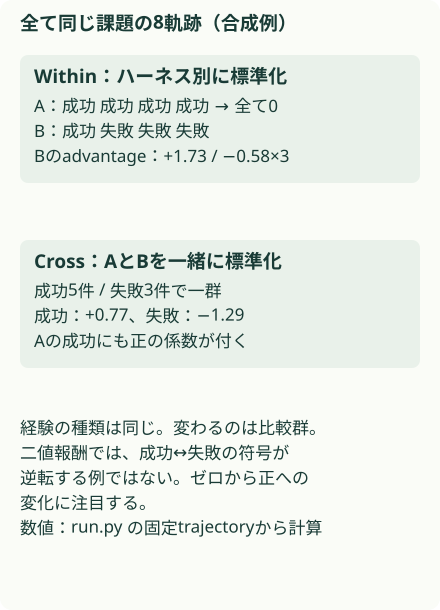
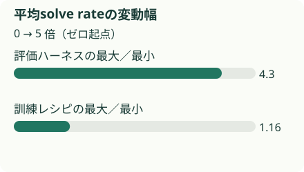
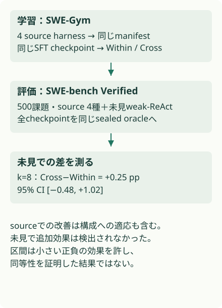

概要
同じ多様な軌跡を学んでも、ハーネスをまたぐGRPOの報酬比較に移植性の上積みは観測されなかった。評価ハーネスによる平均solve rateの幅は約4.3倍で、学習レシピによる幅の約1.16倍より大きい。
問題設定
同じコーディング方策でも、編集ツール、観測の形式、文脈管理、再試行規則が違えば成功率が変わる。複数のハーネスを使う学習には二つの選択がある。いくつの環境で経験を集めるかと、どの軌跡同士を報酬で比べるかだ。両者を一緒に変えると、改善原因が分からない。
核心
著者の主張 · 論文に書かれていること
著者は複数ハーネスへのexposure（経験）を固定し、WithinとCrossのcredit assignment（相対報酬の割当）だけを変えた。Crossのadvantageにはハーネスの識別情報が残るが、未見ハーネス上の追加改善は検出されなかった。
解釈・批評 · 読書メモ
既存のHarness-Benchが問う「どの実行環境で測ったか」を、学習側の比較群まで広げた研究と読める。ただし多ハーネス経験そのものの有効性を否定していない。小規模なQwen3-8B、固定データ再生、今回のハーネス群でCrossの追加効果を検出できなかった、という範囲を守るべきだ。
モデル / 手法
WithinもCrossも、同じ4ハーネスの軌跡を読む
Aider、OpenHands、Qwen Code、SWE-agentでSWE-Gymの軌跡を集める。同一のQwen3-8Bの教師あり学習後checkpointから出発し、固定manifest、token、reward、loss mask、更新予算をそろえて再生する。主要RL群は183課題・5,543episode、81,216recordを共有し、実現したoptimizer stepは81,200（付録G、表7–8）。
違うのは平均と標準偏差を計算する範囲
たとえば同じ課題の8軌跡を、Aiderの4件とSWE-agentの4件に分けるか、8件で一群にするかを考える。軌跡eの課題をx、ハーネスをh、成功報酬をrとする。Withinは A_e = (r_e − mean(r|x,h))/(std(r|x,h)+ε)。Crossは A_e = (r_e − mean(r|x))/(std(r|x)+ε) で、同じ課題の別ハーネスまでまとめる。
このAがGRPOの方策確率比に掛かる。全成功または全失敗の群は分散がゼロなので、Withinでは更新信号が消える。Crossなら別ハーネスとの成功率差が残りうる。これは推論能力の差だけでなく、ツール形式との相性でも生まれる。二値報酬では混合群内の成功は正、失敗は負になる。群を変えて常に符号が逆転するのではなく、ゼロだった信号が正または負になるケースが重要だ。
評価には学習時のフィードバックを使わない
SWE-bench Verifiedの500課題を、4つのsourceハーネスと学習に出さない最小weak-ReActハーネスで実行する。sealed oracleはepisodeごとの隔離環境でpatchを再実行し、モデルに見せたfeedback testと異なるhidden testで判定する。inline判定との食い違いが2.58%あり、すべて楽観方向だったため、論文の数字はoracle側だけで集計する（付録L）。
経験を増やすことと報酬を比べることは別
{kind=link}

advantageの平均をどこで引くか
- WithinA = (r − μ_task,harness) / (σ_task,harness + ε)
同じ課題、同じハーネスの中で報酬を標準化する。
- CrossA = (r − μ_task) / (σ_task + ε)
同じ課題の全ハーネスを一群にする。
なぜ効きそうか
解釈・推論
同じ課題でも、使いやすいハーネスで得た成功は高いadvantageになりやすい。方策はその構成で報酬を得る振る舞いへ寄せられる可能性がある。ただしadvantageからハーネスを分類できることだけでは、汎化を妨げる原因の証明にはならない。評価時のハーネス交換と組み合わせて読む必要がある。
根拠
ハーネス交換の差と、creditの差を別々に読む
24,000件のsealed評価では、ハーネス別平均solve rateの範囲が2.14–9.27%（約4.3倍）だった。レシピ別平均の範囲の比は約1.16倍。これは平均の最大／最小比で、分散分解の寄与率ではない（§4）。
未見ハーネスで1課題8試行に増やしたCross−Withinは+0.25 pp、95%区間は[−0.48,+1.02]。3学習seedをまとめた4試行条件では+0.16 pp、[−0.41,+0.72]だった（表2–4）。ゼロを含むので優越は示されないが、小さい正負の効果は残る。検出限界もあり、同等性試験の結論ではない。
Crossのadvantageから元のハーネスを当てる分類器は、課題単位のout-of-fold評価でラベルshuffle基準より+4.48 pp。Withinは+0.02 ppだった（表9）。Withinのゼロadvantage比率は55.1%、Crossは0.0%（表7）。信号が増えても未見スコアの追加改善には結びつかなかった。訓練データの半分をon-policyで再収集した補助実験でも、結論は変わらなかった。
平均solve rateの変動幅
{kind=link}

環境を交換して残る差を測る
{kind=link}

実行可能な理解
固定スクリプトが出した8軌跡を、テキスト、JSON、XML風の3インターフェースで採点する。A/Bのsource報酬についてWithinとCrossのadvantageを計算し、軌跡ごとの値をresults.jsonに保存する。
方策更新は実装しない。未見形式でのスコアが変わらないのは固定軌跡の対照であり、学習後の移植性を測った論文の帰無結果の再現ではない。
このLabは run.py 単体で実行できます。結果はコードと同じフォルダーに保存されます。
結果
合成インターフェースの固定軌跡。勾配係数のみ計算し、方策は更新しない。未見スコア不変は設計上の対照であり、論文の帰無結果の再現ではない。
評価インターフェースを交換
| 指標 | value |
|---|---|
| A | 0.625 |
| B | 0.125 |
| held_out | 0.0 |
非ゼロのadvantageを持つ軌跡
| 指標 | value |
|---|---|
| Within | 4 |
| Cross | 8 |
生の results.json
{
"note": "合成インターフェースの固定軌跡。勾配係数のみ計算し、方策は更新しない。未見スコア不変は設計上の対照であり、論文の帰無結果の再現ではない。",
"experiments": [
{
"name": "評価インターフェースを交換",
"metrics": {
"A": 0.625,
"B": 0.125,
"held_out": 0.0
}
},
{
"name": "非ゼロのadvantageを持つ軌跡",
"metrics": {
"Within": 4,
"Cross": 8
}
}
],
"trajectories": [
{
"harness": "A",
"trace": "return 2",
"reward": 1,
"within": 0.0,
"cross": 0.774597
},
{
"harness": "A",
"trace": "return 2",
"reward": 1,
"within": 0.0,
"cross": 0.774597
},
{
"harness": "A",
"trace": "return 2",
"reward": 1,
"within": 0.0,
"cross": 0.774597
},
{
"harness": "A",
"trace": "return 2",
"reward": 1,
"within": 0.0,
"cross": 0.774597
},
{
"harness": "B",
"trace": "{\"answer\":2}",
"reward": 1,
"within": 1.732051,
"cross": 0.774597
},
{
"harness": "B",
"trace": "return 2",
"reward": 0,
"within": -0.57735,
"cross": -1.290994
},
{
"harness": "B",
"trace": "return 3",
"reward": 0,
"within": -0.57735,
"cross": -1.290994
},
{
"harness": "B",
"trace": "return 4",
"reward": 0,
"within": -0.57735,
"cross": -1.290994
}
],
"held_out_before": 0.0,
"held_out_after_credit_only": 0.0,
"verification": {
"mechanism": "PARTIAL",
"performance": "NOT TESTED",
"scaling": "NOT TESTED",
"production_applicability": "NOT TESTED"
}
}非ゼロのadvantageはWithinの4軌跡からCrossの8軌跡へ増えた。元のrewardは同じ。未見インターフェースでの成功率は前後とも0だが、方策を更新していないため設計上変化しない。
検証できたこと
同じ軌跡・同じ報酬でも群の境界を変えると非ゼロの更新係数を持つ軌跡が増える。インターフェースだけを交換しても実行成否が変わる。この二点を独立に確認した。
検証していないこと
LLMのGRPO、SWE-bench、sealed oracleのコンテナ、seed間の学習分散は未実装。sourceハーネスへの適応やportable capabilityの獲得はNOT TESTED。少数のインターフェース例からハーネス一般の序列を導くこともできない。
実装
リポジトリのルートで uv run papers/multi-harness-rl/run.py を実行する。Python標準ライブラリだけを使い、CPUで完了する。結果は同じディレクトリの results.json に保存する。
乱数を使う実験はseedを固定した。数値は論文の測定値と別に集計している。
原論文・公式コード対応
| 論文 | このLab | 省略・公式コード |
|---|---|---|
| §3 群の定義 | advantages、experiment |
optimizer・確率比は計算しない |
| §4–5 harness swap | execute |
文字列の受理だけで課題を模す |
| 表7/9 信号監査 | trajectory別Within/Cross | 分類器・統計検定は未実行 |
| 付録F/G 公開artifact記述 | 本文を確認 | 本文中のローカルartifact名は公開URLとみなさない。取得可能な公式repoは未確認 |
一次資料は arXiv v1 PDF。公式実装の実行は行っていない。